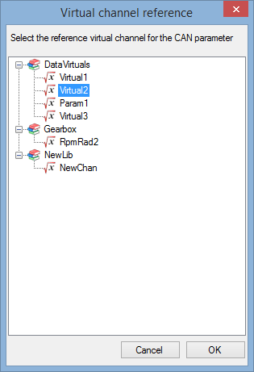
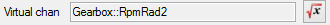
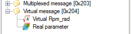

Basically, a virtual CAN signal is a virtual channel embedded into a CAN message.
A standard CAN signal can be used either in manual TX or RX mode in a cycle. For transmission (TX) it uses a static value defined by the user. In reception (RX) it simply gets the value received.
Value of a virtual CAN signal is neither defined by the user or received! The value is computed real time using other parameter values. See the 'Virtual channel' section for more details.
Click the 'New virtual parameter' button  to create a virtual CAN signal.
to create a virtual CAN signal.
The virtual channels selection window should appear.

Pick up the virtual channel that you want to add in your message and click 'OK'.

Configure your virtual signal the same way you would do for a standard parameter and then click the 'Create' button.
Note that compared to standard parameter, for virtual CAN signal the section 'Virtual chan' appeared. This section shows the virtual channel used as source of the virtual signal.
The source is indicated using the following format: 'XXX::YYY' where 'XXX' is the name of the library hosting
your virtual channel and 'YYY' is the name of the virtual channel.

Click on the  button to change the virtual source.
button to change the virtual source.
In order to be easily identified in the CAN configuration tree view, virtual CAN signal are marked with the virtual channel icon .

Created with the Personal Edition of HelpNDoc: Free EPub producer